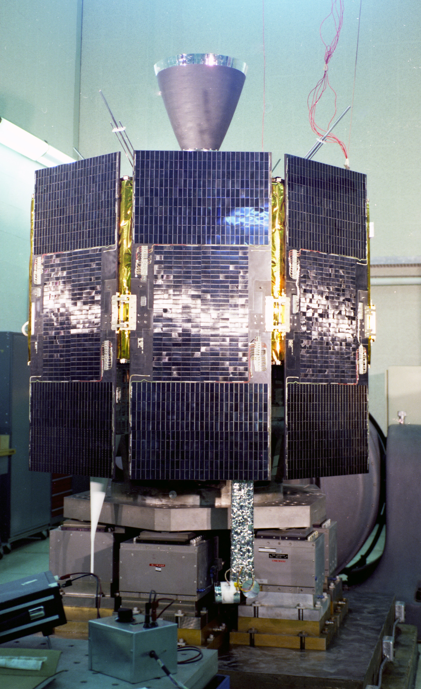

第 6 章
每天三十八微秒的相对论
范登堡空军基地的发射控制室里，一排阴极射线管显示器在黑暗中泛着绿光。时间是1978年2月22日凌晨。坐在第三排左侧的那个年轻工程师后来回忆说，他当时脑子里反复转着一个念头：如果爱因

NTS-2导航技术卫星
图源：维基共享资源 · U.S. Navy · Public domain
斯坦错了，这颗卫星就是一堆废铁。
那颗卫星叫NTS-2，导航技术卫星2号，GPS系统的第一颗试验星。在它之前的NTS-1已经验证了原子钟可以在太空中工作，但NTS-2要回答的问题更根本——一个在物理学界毫无争议、但在工程界引发激烈争吵的问题：相对论效应到底要不要修正？这场争论的种子，早在十多年前子午仪系统运行时就已埋下，而此刻，它即将在发射倒计时的滴答声中迎来最终裁决。
争吵在发射前几个月就开始了。一边是海军研究实验室的科学家，领头的是罗杰·伊斯顿，他已经在卫星导航领域工作了十五年，是子午仪系统的重要设计者之一。伊斯顿和他的团队坚持认为，必须在卫星上安装一个频率补偿装置，预先抵消相对论造成的时间偏差。理由很明确：卫星在距离地面两万多公里的轨道上以每秒约四公里的速度飞行。
根据爱因斯坦1905年提出的狭义相对论，高速运动的时钟会变慢——卫星上的原子钟每天会比地面钟慢大约七微秒。卫星远离地球引力场。根据1915年提出的广义相对论，引力势较高的地方时钟走得快——卫星上的原子钟每天会比地面钟快大约四十五微秒。两个效应方向相反，叠加之后净结果是：卫星时钟每天比地面钟快大约三十八微秒。
三十八微秒。不到半毫秒的零头。对于一个用电磁波信号测量距离的系统来说，这意味着什么？电磁波以光速传播，每秒三十万公里。三十八微秒乘以光速，是十一点四公里。一天之后，仅这一个未修正的误差源就能让定位偏差累积到十一公里以上。两周之后，整个系统彻底崩溃——你拿着接收机站在时代广场，它却告诉你正漂在长岛海峡里。这就是伊斯顿反复强调的论点。
但在1978年的工程界，并不是所有人都买账。反对的声音主要来自一些资深的电子工程师。他们的逻辑听上去也不无道理：相对论效应是理论物理学家在黑板上的推演，从来没有在实际的航天工程中被验证过。
参照三球交汇定位的原理，根据3颗卫星到用户终端的距离信息，根据三维的距离公式，就依靠列出3个方程得到用户终端的位置信息，即理论上使用3颗卫星就可达成无源定位，但由于卫星时钟和用户终端使用的时钟间一般会有误差，而电磁波以光速传播，微小的时间误差将会使得距离信息出现巨大失真，实际上应当认为时钟差距不是0而是一个未知数t，如此方程中就有4个未知数，即客户端的三位坐标（X，Y，Z），以及时钟差距t，故需要4颗卫星来列出4个关于距离的方程式，最后才能求得答案。电磁波以30万千米/秒的光速传播，在测量卫星距离时，若卫星钟有一纳秒（十亿分之一秒）时间误差，会产生三十厘米距离误差。
谁真的量到过高速飞行时钟的变慢效应？在范登堡的测试车间里，有工程师提出疑虑：频率补偿电路如果本身不准确，反而会引入新的误差源，卫星的有效载荷重量和预算已经很紧张，为理论物理学的推演预留硬件接口得不偿失。
这场争论触及了一个深层的问题：理论物理学和工程实践之间的信任关系。在大多数技术系统中，物理定律当然会被尊重，但那是在设计阶段就把效应消弭于无形，而不是在运行时持续进行实时修正。桥梁设计者要感谢牛顿力学，但他们不需要在每座桥梁上安装重力感应器来验证F=ma。而GPS的情况截然不同：如果爱因斯坦是正确的，那么相对论效应就属于那种不修正就会让系统失效、但修正了又完全看不见其存在的“幽灵参数”。工程师看不到它，用户永远不会感知到它，只有发现者本人要求为这个数学推演留下硬件接口。
1977年秋天的一次设计评审会上，争论达到了顶点。伊斯顿拿出了计算手稿——他逐项列出了狭义和广义相对论的效应，注明公式和参数选择，最后写了那个数字：38微秒/天。
会议室里的其他人传阅了这份手稿。后来有人回忆，一个空军上校看完后的反应是质疑爱因斯坦理论的可能性。伊斯顿没有退缩，他的态度很清楚：如果理论错了，那么验证这件事情本身就是一个有价值的实验。这句话最终起了作用。GPS项目得到了充足的预算和军方高层的支持，决策者决定采纳科学家的建议。
NTS-2卫星被要求安装一个频率切换开关——在地面上，这个开关可以控制卫星信号发射机是否启用相对论补偿。开关打开时，卫星的原子钟输出频率会被人为调偏一个微小量，以预先抵消相对论的净效应；开关关闭时，卫星就按照原子钟本身的自然频率发射信号。
换句话说，这颗实验卫星被设计成一个可重复的物理学实验设备：先用二十天时间关闭补偿，测量实际漂移有多大；然后打开补偿，验证修正是否准确。这不是锦上添花的附属实验，而是GPS能否按设计精度工作的生死验证。范登堡的发射时间定在凌晨，只因当时的发射窗口排期如此。
德尔塔火箭的发动机在夜色中点火时，NTS-2卫星重约四百四十公斤，装载着两台铯原子钟——这是当时最精确的时间测量设备，误差积累需要三十万年才会偏离一秒。铯原子钟的工作原理用一句话就能说清楚：铯原子在特定频率的微波辐射下会发生共振，这个频率精确稳定在9,192,631,770赫兹，不随温度、压力和材料老化而漂移。把铯原子的共振频率当作计时的节拍器，就是原子钟的基本逻辑。在NTS-2上，这两台铯原子钟产生的每秒十点二三兆次振荡，是后来整个GPS系统时间基准的源头。
卫星进入预定轨道的过程花了几天时间。工程师们要等星上设备逐一开机自检，确认太阳能帆板展开、姿态控制系统稳定、原子钟锁频正常。
最关键的操作发生在一周后：地面控制中心发出指令，让NTS-2开始播发导航信号，频率切换开关保持关闭状态。按计划，这将是二十天的“裸奔”——不做相对论补偿，让原子钟的自然频率直接调制信号，然后由地面监测站连续测量卫星信号的时间偏移。
位于科罗拉多州和夏威夷的监测站进入了紧张的值守模式。监测的方法并不复杂：用一个已知精确位置的接收天线持续接收NTS-2的信号，测量信号到达时间的规律性变化。如果卫星时钟完全稳定，信号到达时间应该只受轨道运动影响，呈现出可精确预测的周期性。任何额外的系统性漂移，都会在测量数据中显现为累积性的偏差。
头两天，数据几乎看不出来什么异常。几十微秒级别的日漂移，掩藏在轨道运动的毫秒级变化和电离层延迟的微秒级噪声中，就像在一场暴雨中辨认某一片特定树叶落地的声音。
但到了第五天，信号处理团队已经可以在残差曲线上看到一个清晰向上的趋势线。第十天，数值明确到无法否认：卫星原子钟每天比地面钟快大约三十八微秒，正负误差不超过一微秒。
伊斯顿后来在一次采访中说，他当时并不意外——物理定律不是投票决定的。但他承认，亲眼看到测量数据与1915年的理论预言完全吻合，仍然是一种罕见的满足感。这不是在黑板上推导的数学结论，而是从两万公里外的太空中发回的确凿事实。
铯原子钟每秒振荡九十二亿次，每天快三十八微秒意味着卫星钟的振荡频率比地面参考钟高出大约十的负十次方量级。这个极其微小的相对偏差，被测量设备清晰地从噪声中提了出来，精确吻合爱因斯坦方程的解。第二十天，地面控制中心发出了切换指令。NTS-2上的频率补偿开关打开，卫星原子钟的输出频率被预先调低了相应的比例——十的负十次方量级的微小偏移，通过频率合成器的精确设置，永久性地补偿了相对论净效应。切换之后的数据立刻发生变化：累积漂移消失了，信号时间偏移回归到仅由轨道运动决定的可预测范围。
这件事的意义远超一次工程验证的成功。NTS-2的实验意味着，全球定位系统从它诞生的第一天起，就不是一个纯粹的无线电工程系统。它是人类历史上第一个将广义相对论修正嵌入日常运行的消费级技术基础设施。在你每一次打开手机导航时，在每一辆外卖电动车停在小区门口时，在每一架民航客机在跑道上完成盲降时，爱因斯坦的引力场方程都在工作。
不是作为理论背景被致敬，而是作为一行代码、一个频率补偿参数，实实在在地参与了物理信号的生成过程。这三十八微秒的发现和补偿，后来成为GPS设计规范中不可删减的条目。每一颗GPS卫星在轨道上都运行着相同的相对论修正算法：星上原子钟的自然频率是10.22999999543兆赫兹——注意这个数字，它比标准原子钟频率10.23兆赫兹略低，这个差值精确对应每天三十八微秒的累积效应。当你在地面上接收到10.23兆赫兹的标准信号时，实际上卫星发射的是略低的频率。相对论效应在信号传播过程中完成了“自动加法”，让抵达地面的信号恰好是你需要的标准频率。
这套精妙的机制引出了一个值得细究的问题：为什么不在地面接收机端做修正，偏要在卫星上预先补偿？技术上当然可以在地面端通过软件算法扣除相对论效应——计算卫星速度、轨道高度和相应的时间膨胀量，在定位解算中加入这个修正项。但实际工程选择是在卫星端做硬件补偿，原因有两层。
第一层是系统架构：GPS从一开始就被设计成单向广播系统，被动接收机不需要发送任何信息给卫星，接收机的价格可以做到极低——这也是为什么你手机里的GPS芯片只要几美元。如果在地面端做修正，每个接收机都需要增加相对论计算模块，增加功耗和成本。第二层是精度传递：卫星端一次性补偿可以确保从信号源头就消除误差，而不是让误差先进入测量体系再被后处理扣除——前者的精度鲁棒性远高于后者，尤其是在动态应用场景中。
但更根本的原因是制度性的。GPS设计团队从NTS-2的实验中学到了一件事：物理定律不打折。如果相对论效应存在且量值精确已知，那么最安全的做法就是把修正直接做进系统底层，让它成为信号定义的一部分，而不是留给不同设备、不同软件版本的开发者去各自处理。这是在不确定性面前选择了确定性，在工程选择中体现了对基础物理的尊重。这种尊重不仅保障了定位精度，更深远地影响了一个军用系统走向公共品时的架构品质——它不妥协。
然而，这里有一个经常被忽视的细节：狭义相对论和广义相对论对时间的影响方向为什么相反？
这个物理图景值得花一点时间厘清。狭义相对论告诉我们，运动的时钟走得慢。GPS卫星以约每秒四公里的速度运行，卫星上的铯原子钟因为这种高速运动每天会比地面钟慢七微秒——这是时间膨胀效应，地面上的人觉得卫星钟变慢了。但同时，广义相对论告诉我们，引力场越弱的地方时间流逝越快。GPS卫星轨道的引力势远比地面高，因为地球引力随距离衰减。从地面的观察者来看，卫星上的时间过得更快——每天快约四十五微秒。这两股力量在各自主宰的时空方向上拉扯，最后在大约两万公里的轨道高度上达成了这个精巧的协议：四十五减七，等于三十八。
这不是巧合。两个效应数值上的相对大小取决于轨道高度。如果GPS卫星飞得更高一点，引力势继续变浅，广义相对论效应会更大，净效应会比三十八微秒更大。如果飞得更低，轨道速度增加，狭义相对论效应变强，净效应会变小。
在某个特定的轨道高度上，两个效应会恰好抵消——大约在地球表面以上约三千公里处。但GPS的轨道设计没有选择那个高度，因为那对于覆盖全球和轨道稳定来说不是最优设计。所以，三十八微秒本质上是一个轨道工程决策与物理定律结合的产物。
这个数字也成为物理学史上被反复测量、验证、引用的常数。每一次GPS卫星的原子钟与地面实验室的主钟做时间对比，都是在进行一次广义相对论的空间验证。至今已发射的数十颗GPS卫星，累计运行了数百个卫星年，每一次时间对比都确认了三十八微秒这个数值，误差在千万分之一量级。GPS是人类历史上规模最大、持续时间最长的相对论验证实验，每天投用的“实验设备”数以亿计，而几乎每一个用户都意识不到它的存在。
在NTS-2发射前几年的1971年，物理学家约瑟夫·哈菲勒和理查德·基廷进行了一个著名的实验：他们将四台铯原子钟搬上商业航班，在地球上飞了两圈，然后将飞行中的时钟与留在地面的参考钟进行对比。
实验的目的是验证“双生子佯谬”——狭义和广义相对论对时间流逝的联合影响。实验结果是飞行的时钟与地面钟存在差异，与相对论预言一致。这是第一次在地球尺度上通过宏观物体的运动验证相对论时间效应，1972年发表在《科学》期刊上，在物理学界引起了广泛讨论。
伊斯顿和他的团队知道哈菲勒-基廷实验。但NTS-2的验证规模远超前者：哈菲勒-基廷实验的时钟移动速度大约是每小时几百公里，时间不到两天；而GPS卫星以每秒四公里的速度连续飞行数十年，原子钟的连续工作累积了巨量的测量数据。如果说哈菲勒-基廷是用一架波音747做了一个相对论快闪实验，GPS就是用二十四颗卫星组成的空间实验室进行了一场永不停歇的物理学马拉松。
这让GPS成为理论物理学家最感激的工程系统——它用确凿的工程数据为广义相对论提供了前无古人的验证精度，而那些数据本来只是为了让你知道外卖什么时候送到。但这种依赖也意味着脆弱性。
如果GPS系统对相对论修正的存在性如此敏感——每天三十八微秒、每天十一点四公里——那么任何影响时间基准的因素都可能在系统层面被放大。卫星原子钟本身的精度、地面注入站上传时间校正的准确性、信号传播路径上的电离层和对流层延迟的建模误差——每一个环节都在纳秒级精度上参与最终的距离解算。一个纳秒的误差引入三十厘米的测距偏差。这个数字比许多运维工程师的身体厚度都薄，却在定义着拖拉机方向盘的一厘米精度和金融交换机的一微秒授时。GPS以最抽象的物理学为地基，却支撑着最具体的基础设施。
三十八微秒是这座桥梁的拱顶石。把它拿掉，整座桥就会在一周内无声地垮塌——不是原子钟停止工作，不是信号中断，而是卫星告诉你它是某个位置，而实际它在三十八微秒乘以光速之外的另一个地点。这个错误每天累积，直到定位结果不再具有任何可参考的意义。这正是GPS最不容易向公众解释清楚的一点。
大多数基础设施灾难是可以直观理解的：桥梁断裂是钢铁的失效，电网崩溃是变压器的过载，水管爆裂是材料的老化。但GPS的失效模式不是一个可见的物理断裂，而是一组数字的缓慢漂流。系统看起来一切正常：原子钟还在振荡，信号还在播发，接收机还在亮灯。只是位置悄悄偏离了，从几米积累到几十米、几百米、几公里，像是一个从来不校对时间的手表，渐渐脱离真实世界的节拍。
1978年之后，NTS系列的实验结果被写入GPS的设计基线。后续的Block I和Block II系列卫星，全部在原子钟频率合成器中固化了相对论补偿参数。以后的升级只涉及原子钟本身精度的提升——从铯钟发展到铷钟，再发展到氢脉泽，频率稳定度从十的负十二次方提升到十的负十五次方，但补偿公式始终没变。
不是没人想过改用更精确的广义相对论高阶修正，比如考虑地球重力场的非球对称项带来的微小附加效应，但精度验证的结果表明现有的一级近似补偿已经足够，高阶修正量低于其他误差源，不需要额外增加系统复杂度。
1978年NTS-2完成相对论验证时，没有任何记者报道这件事。当天的报纸头条关心的是中东和平进程、石油价格和冬奥会奖牌。相对论的时间漂移太抽象，无法成为新闻标题。
但就在那个无人注意的时刻，一个根本性的决策被作出了。它永久性地改变了导航技术的哲学基底：从依赖天文观测的传统导航，变成了用原子钟测量时空弯曲的相对论导航新范式。
这个转变的工程后果将在后续的设计迭代中一层层展开。在Block II卫星上，时间同步精度必须维持在全球数十个监测站协同校准的系统性基础上；在用户端，芯片接收机必须正确执行卫星轨道和时间改正数的计算。
参与这个系统运转的人——物理学家、航天工程师、时间频率专家、信号处理算法设计师——共同构成了一个隐形的学术担保链，担保你手机屏幕上那个蓝色光点的位置是真实的。而蓝色光点移动时，它背后的物理图景是这样的：距你两万公里的头顶上，一颗载着铯原子钟的卫星正以每秒四公里的速度穿过真空。它的时间比你过得稍快，每天快三十八微秒。
它向你发射的电磁波信号包含着一组精心编码的数字，其中一个微小的频率偏差已经预先补偿了那个三十八微秒。你的手机接收到信号时，这个补偿恰好抵消了相对论效应，你获得的时间标签与地面参考时间一致，然后你的手机用这些时间标签计算出卫星离你多远，再用至少四颗卫星的距离求出你的位置。整个过程中，爱因斯坦1915年写下的引力场方程被调用了一次，结果正确，验证成功。
这每天都在发生，每秒发生数百万次。全世界的手机加起来每天调用的相对论修正量，比整个物理学界一个世纪的实验总次数还要多。而几乎没有使用者知道这些。这就是GPS作为基础设施最迷人的特质：它把二十世纪物理学最伟大的发现，变成了最不起眼的日常生活参数。在算法层面，相对论修正只是一行代码；在硬件层面，只是一块频率合成器芯片的电压设置。
但这些毫不起眼的配置，确立着一个事实。每一个成功定位的瞬间，都是爱因斯坦对的。三十八微秒就是他留下的签名，一个光子刻在时间上的、看不见却不可磨灭的签名。
而这套精密到依赖时空弯曲理论的系统，向地面播发的信号强度，却微弱到只相当于一盏车灯从两万公里外照到地球——这种脆弱与精密的极端并存，是GPS从诞生之初就携带的基因。